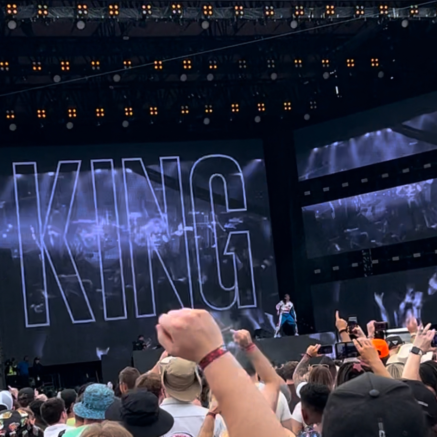

I'm Sam Shumaker, avid listener of the worst music known to man
Blog post
An Introductory Guide to Coding Music
Learn the basics of CSound with this quick tutorial.
Read
Video
Tower of Sheep Vengeance Hardest Jumps Walkthrough
A brief guide to help navigate some of the trickest parts of Tower of Sheep Vengeance, a Minecraft parkour course.
Podcast
AI and the future of music
A glance at the contrast between computer music and AI generated music.
Listen